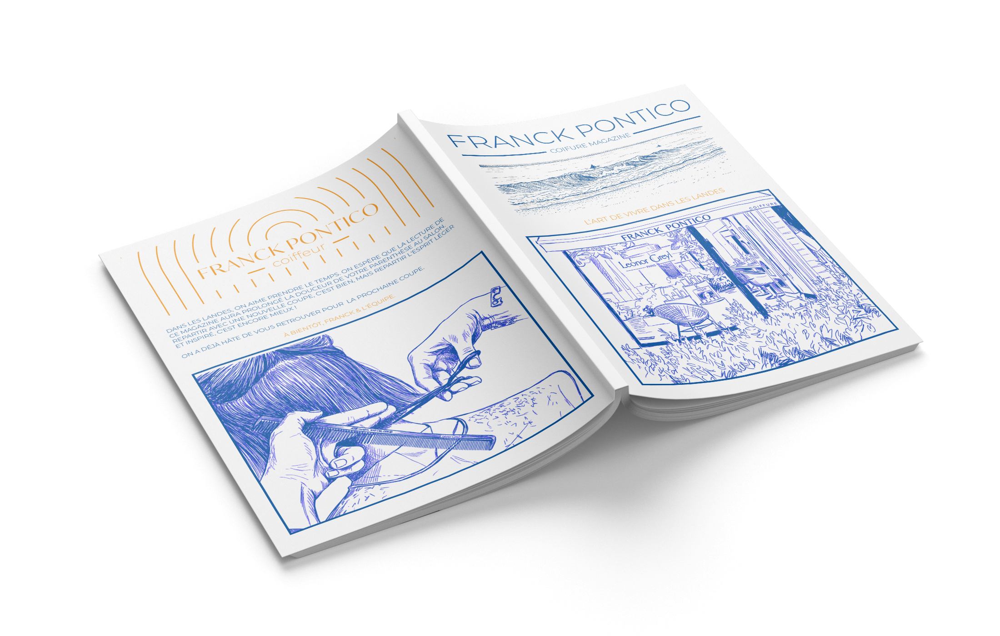
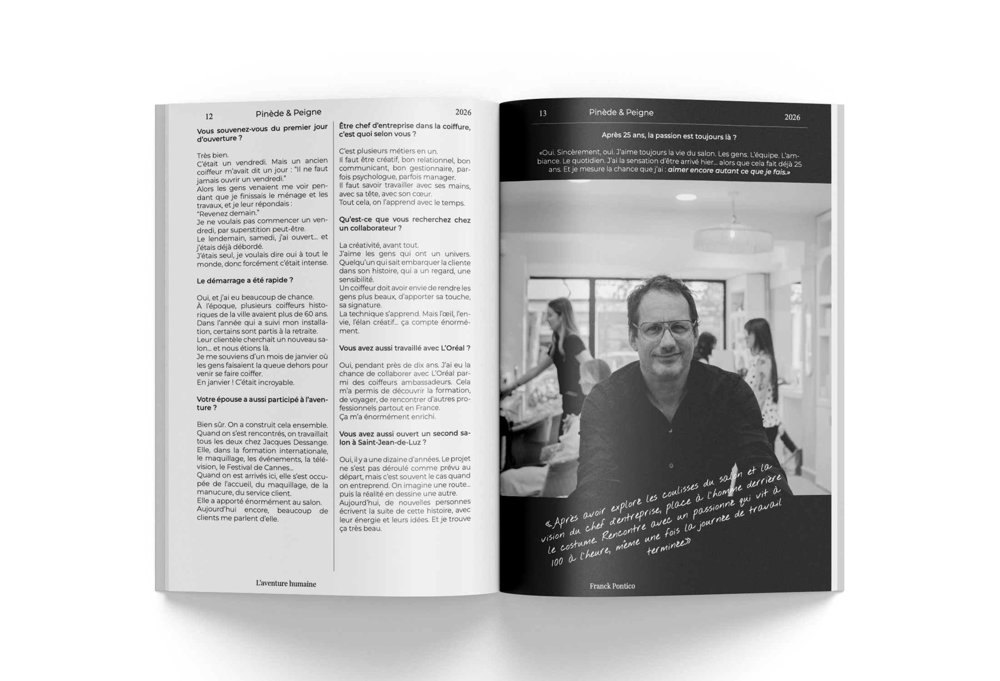
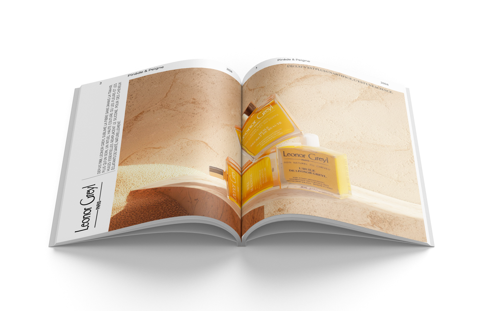
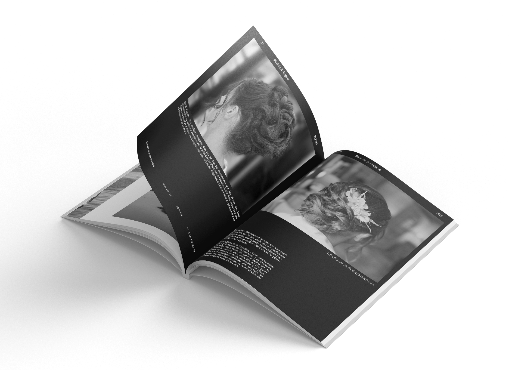
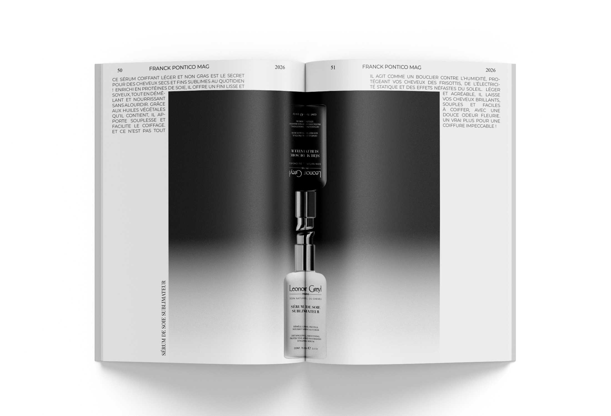
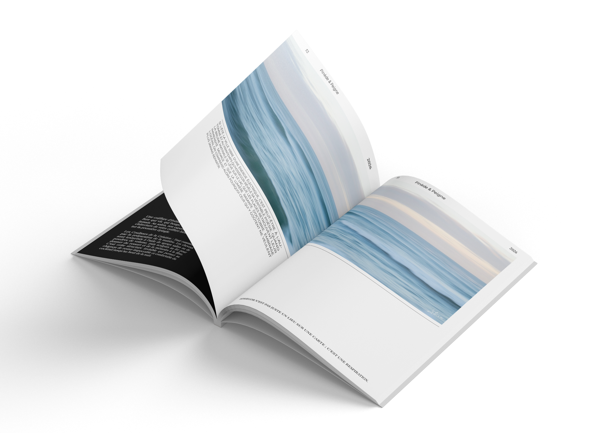
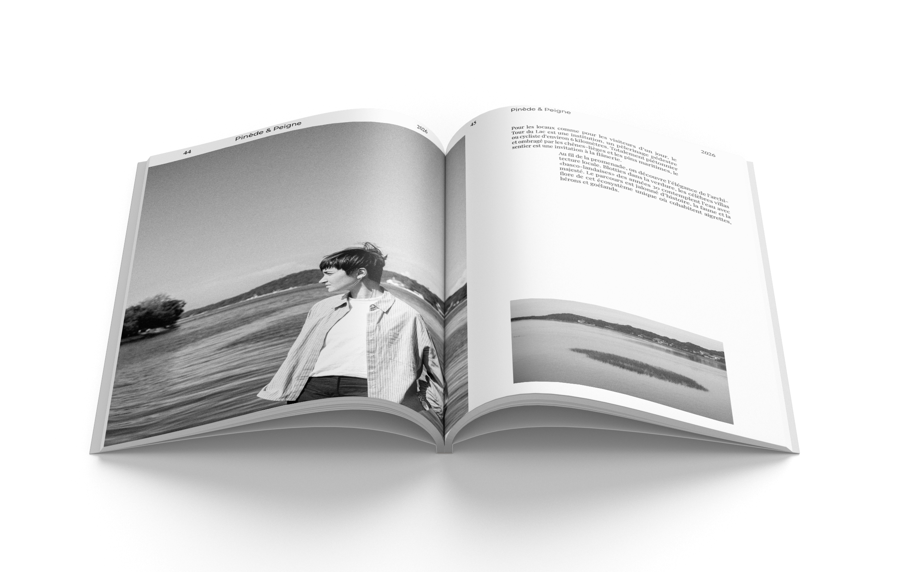
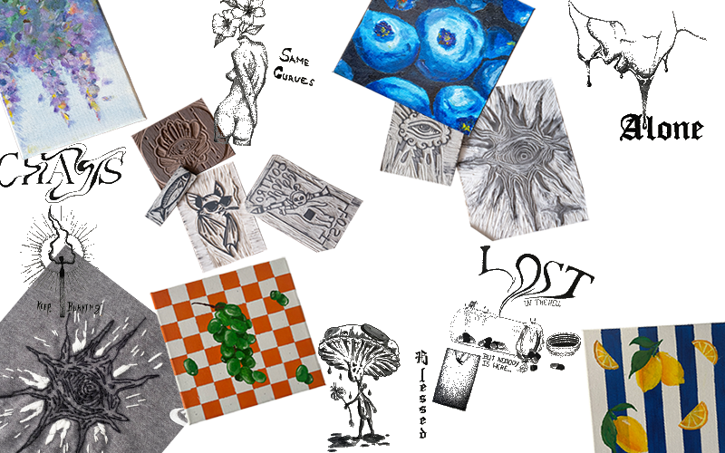

Mes
Projets
Découvrez mes différents travaux
Élaboration complète d’un magazine pour un salon de coiffure. De la mise en page, aux shootings, à la retouche et à la rédaction. Le but était de créer une connexion humaine entre la clientèle quotidienne et touristique du salon avec l’équipe et de proposer à cette clientèle des conseils locaux.
60 pages / des heures de shootings / des interviews / création et retouche d'images / Et bien plus encore.
-

-

-

-

-

-

-

«Redéfinir l’Imaginaire» Ce projet de redesign de couvertures explore la tension des classiques de la science-fiction. À travers ces œuvres majeures (Neuromancien, Silo, 1984), j'ai cherché à capturer l'essence psychologique et l'atmosphère de chaque récit. Chaque couverture est une réponse visuelle à une question simple : comment traduire une émotion complexe paranoïa, immensité, claustrophobie en un langage graphique.
RELECTURE
-

1894 George Orwell
Mon intention était de transformer la couverture en un document classifié «nettoyé» par le Ministère de la Vérité. Le visuel ne montre pas Big Brother, il montre son action. En censurant la quasi-totalité du texte, j’oblige le spectateur à se concentrer uniquement sur les mots autorisés par le Parti, illustrant ainsi le concept de la Novlangue : réduire le langage pour réduire la pensée.
-

SILO Hugh Howey
Mon intention principale était de fusionner le titre du livre avec la structure même du Silo. En positionnant «SILO» verticalement, le lettrage ne sert plus seulement à identifier l’œuvre, mais devient une coupe transversale du bâtiment. Les lettres massives délimitent les étages de la structure, ancrant le nom du livre dans la réalité matérielle et oppressante du récit.
-

NEUROMANCIEN William Gibson
Mon intention était de recréer l’expérience sensorielle de la «Matrice» : une hallucination consensuelle où l’information est reine. Le design repose sur une dualité entre un arrière-plan chaotique, évoquant une mégalopole nocturne saturée de données, et une structure typographique centrale monumentale qui tente de discipliner ce chaos.
Mon approche du design ne s’arrête pas à la limite de mon écran. Elle est le prolongement d’une fascination globale pour la création sous toutes ses formes.
Passionné par la photographie, j’aime capturer l’âme des structures urbaines et les jeux de lumière naturelle. Cette pratique nourrit mon regard de designer.
Mon intérêt pour les activités manuelles, du travail du bois a la broderie... est également central dans ma démarche. Toucher la matière, comprendre l’assemblage
et accepter l’imperfection du réel m’aide à donner de la profondeur à mes projets graphiques.
Enfin, Au-delà de la grille et des pixels, mon travail de designer est nourri par une curiosité insatiable pour les mondes imaginaires. Passionné de littérature de science-fiction et de récits dystopiques, je puise mon inspiration dans la capacité des auteurs à bâtir des univers complexes à partir d’une simple idée.
